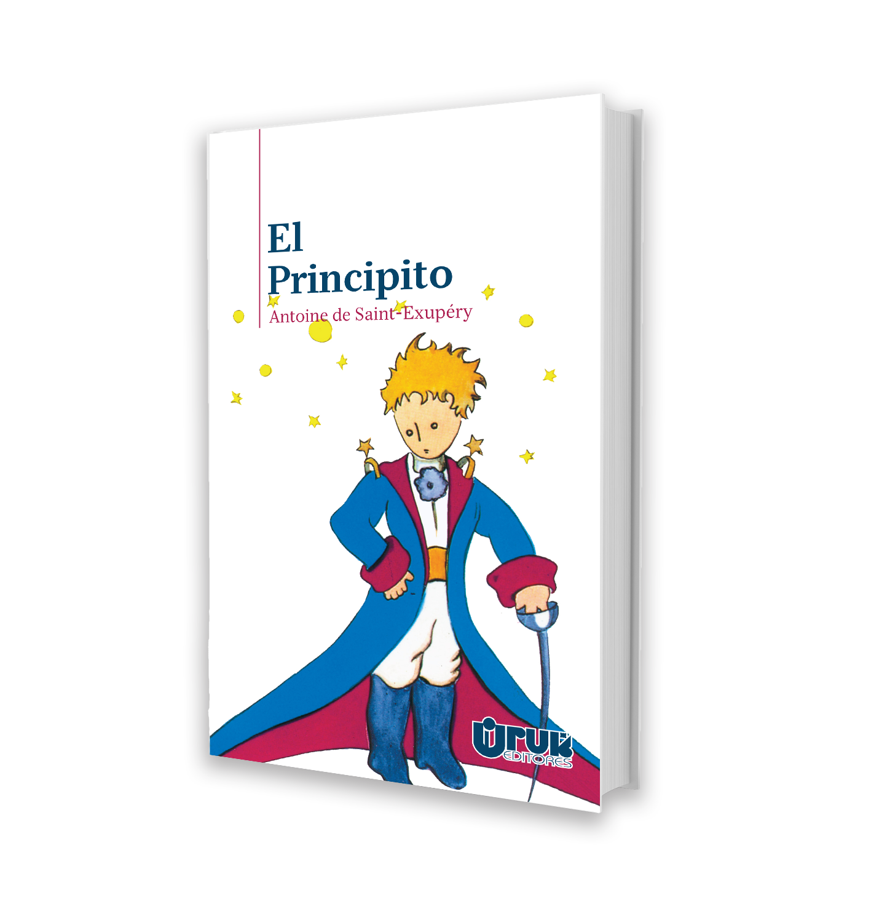
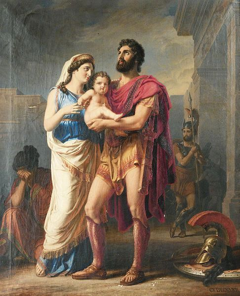

Librería "Astianacte"
"Lectura y cultura"
Índice

- Objetivo.
- Datos importantes.
- Fundación.
- Origen del Nombre.
- Datos para el interesado.
- Número.
- Dirección.
- Correo Electrónico.
¿Cuál es nuestro objetivo?
La librería "Astianacte" busca hacer perenne el interés de las nuevas generaciones por la cultura, el arte y, sobre todo, la lectura; esto se logra con un catálogo de libros infantiles clásicos que mantienen siempre la avidez por la buena lectura y conocimiento en los niños.

Buena parte de la cultura yace al interior de los libros, contando historias fantásticas, hermosas y melífluas que despiertan la imaginación y el amor por los relatos y el lenguaje. Por aquello, vuélvese apremiante la divulgación de lectura de calidad desde temprana edad.
Datos importantes
Fundación
La Librería "Astianacte" fue inaugurada en Ecatepec el día 14 de junio de 1990, siendo el principal donador Eder Joel Castro Aguilar. En agradecimiento la biblioteca abrió sus puertas el mismo día del cumpleaños del mayor donador. La construcción también fue impelida, en parte, por el Programa Solidaridad, que estuvo en vigencia durante el sexenio de entonces.
Origen del Nombre
El nombre que lleva la librería es oriundo de uno de los libros más conocidos, "La Ilíada", que es el primer poema épico de Occidente y, por lo tanto, muy importante para la literatura en general. Homero, el escritor del poema, cuenta en el Canto XI el último coloquio entre Héctor, protector de Troya, y Andrómaca, el cual es presenciado, también, por su hijo, Astianacte, que para entonces es un párvulo. He ahí el origen del nombre, que significa "El Protector de la Ciudad".

La Despedida de Héctor de Andrómaca y Astianacte - Carl Friedrich Deckler
Datos para el Interesado
Número de Teléfono
55-5624-2000
Dirección
Av. Carlos Hank González s/n, Col. Valle de Ecatepec, Ecatepec de Morelos, Edo. de México, CP 55119
Correo Electrónico
libreriastianacte@gmail.com